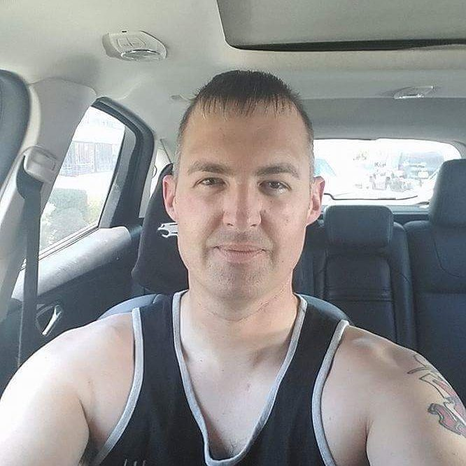

Personal Bio
Hello! My name is David See and I am a student Full Stack Web Developer.
 For 20 years I was able to persue one of my dreams to become a U.S. Army Soldier. Teaching me communucation, leadership, and direction along the way. Now, it is time for me to pick up my second passion. One that will take me well beyond where I think I may go. One that will put me in touch with the latest technology with the help of some of the best teams, Web Development.
Develops
Greatly increased my section's operational capabilities by developing a training program for essential programs and machines.
Presence
A Confident leader who makes decisions based on the best interests of the organization.
Achieves
Developed an easy to use interactive online order form that streamlined the process for completion of over 300 projects.
Intellect
Applied my expertise as Knowledge Management Supervisor at Fort Irwin, CA to create an automated visitor sign in process covering the entire installation.